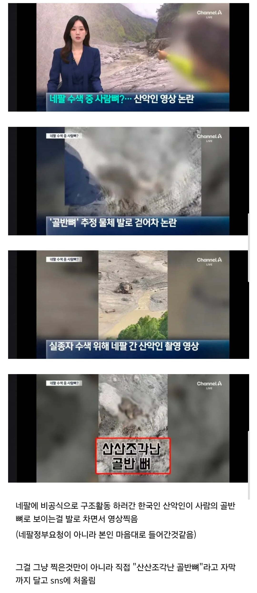

이래서 네팔 정부에서 구호 손길 안받으려고 한거였나

이래서 네팔 정부에서 구호 손길 안받으려고 한거였나
세상은 자신의 눈으로 보는 법
객관적으로볼려고
니 객관이 자신의 눈으로 본 거
너같이 소중국이 맞다고 하면서 자기 반성하려는 인구수가 많은걸로 봐서는 그래도 우리나라 낫지 않을까 싶다. 그런 인식 조차 없는데가 ㄹㅇ 짱이지
본인이 직접 증명하고있는데 뭘 그런말을 하고있어
영상 원본은 못 찾겠어서
뉴스에서 나온 영상으로 찾아서 보니까
수색 도중에 흙 묻은 잔해를 발로 걷어서 반댓면을 드러냈는데 그게 골반 뼈였음.
(미확인 -> 잔해를 발로 걷음 -> 사람 뼈임을 인지
인지, 사람 뼈인걸 알고 발로 친건지를 알 수가 없음)
발로 '걷어찼다'는 말처럼 뻥 찼다던지 여러번 툭툭 찼다던지 하는 행위는 아니었음.
원본 영상 속 소리를 들어봐야 어디까지 인지하고 행동한건지 정확히 알 것 같긴 한데, 보도가 실제 행위에 비해 자극적인듯?
뭐지? (발로 툭툭) 사람 뼈인가?
이거란 거지?
그럴수도 있고
'와~ 이게 다 사람 뼙니다' 하면서 쳐서 욕 개쳐먹어야 할 일일지도 모르고..
모르겠다는 말이었음.
근데 모션만 봐서는 알 수가 없더라고. 최소한 유희로 뻥 차거나 여러번 툭툭 차는 행위는 아니긴 했음
산악인이라 해봤자 현지인에 비하면 산 조또 못타잖어 왜 간거야
중국에서도 저런 빌런이 뉴스에나오고 우리가 짱ㄱ욕하듯이
세계인들도 한국에 저런빌런이 뉴스에나오고 욕하겟지
한국인구가10억이면 저런빌런이20배나오고
한국은 소중국이맞다니까
내가보기앤 중국도 소수가물흐리는건데 그소수가 인구비례해서 한국의20배라 뉴스가 많이나와서그럼